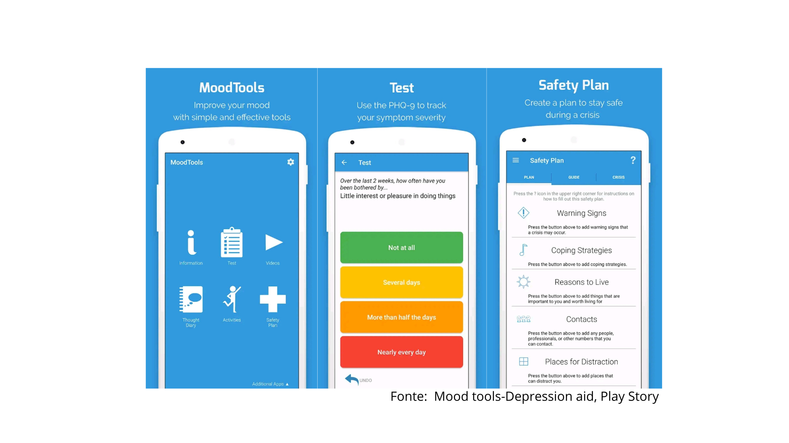
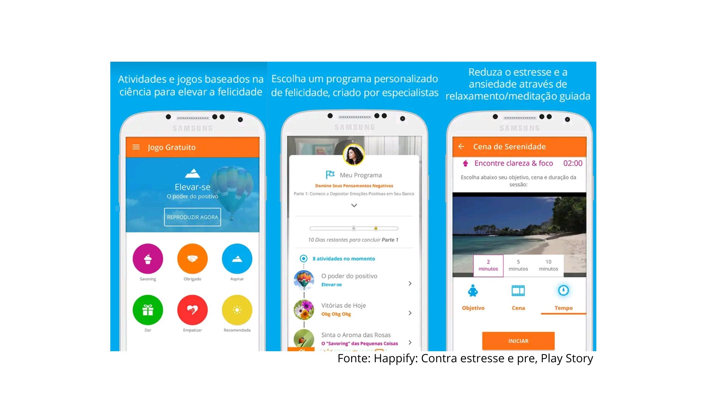

Aplicativos
Os aplicativos de monitoramento funcionam com base em registros diários de dados
dos usuários relacionados ao seu humor, as escalas de humor podem ser definidas por
emojis ou por meio textual. Com os registros os apps realizam uma análise de dados e
com ela oferecem os insights, que podem ser gráficos que mostram o humor durante o
período de análise.
Alguns aplicativos com esse proposito são:
Moodtools
A função do aplicativo é ajudar os utilizadores a combater a depressão e a gerir os seus humores negativos, utilizando ferramentas baseadas em Terapia Cognitivo-Comportamento, como um diário de pensamentos, vídeos de apoio, um questionário para avaliar sintomas de depressão e um plano de segurança contra suicídio com recursos de emergência.
Ele auxilia a saúde mental oferecendo um conjunto de ferramentas baseadas na Terapia Cognitivo-Comportamental para pessoas que sofrem de depressão e outros humores negativos.
Esse aplicativo foi desenvolvido pelos estudantes Eddie Liu e Nancy Su, ambos formados em psicologia pela Duke University.

Cíngulo cura e crescimento
O aplicativo funciona promovendo o bem-estar mental através do autoconhecimento, oferecendo testes de perfil emocional, sessões diárias guiadas sobre temas como ansiedade e autoestima, técnicas de relaxamento para momentos agudos (SOS), e um diário emocional para reflexão.
O aplicativo Cíngulo auxilia a saúde mental através de terapia guiada por meio de uma autoavaliação que identifica traços emocionais e cria um programa personalizado com sessões de áudio e vídeo focadas em temas como ansiedade, estresse e autoestima.
Ele foi fundado em 2016 pelos empreendedores Diogo Lara, Gustavo Ottoni e Ricardo Serro.

Happify
A função do aplicativo é promover o bem-estar emocional e aumentar a felicidade do usuário através de atividades e jogos baseados em ciência, como a psicologia positiva, a terapia cognitivo-comportamento e o mindfulness.
Ele auxilia na saúde mental através de atividades interativas, jogos e trilhas guiadas, com base na psicologia positiva e terapia cognitivo-comportamental, para combater o stress e a ansiedade, melhorar o humor, aumentar a resiliência e desenvolver hábitos positivos de forma interativa e engajadora.
O aplicativo foi criado pela empresa de tecnologia de bem-estar Twill, anteriormente conhecida como Happify Health

Daylio
A função do aplicativo é funcionar como um diário de humor e um monitor de hábitos, permitindo que o usuário registre diariamente seu estado emocional e as atividades que influenciam seu bem-estar.
Ele ajuda a identificar padrões e gatilhos emocionais, fornecendo estatísticas e gráficos que mostram a relação entre as atividades e o humor, o que promove um autoconhecimento e pode ser um apoio valioso em processos terapêuticos.
foi desenvolvido pela Habitics